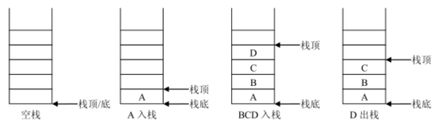
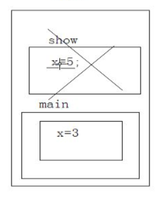

栈的定义
栈（stack ）又称堆栈，它是运算受限的线性表。
其限制是仅允许在表的一端进行插入和删除操作，不允许在其他任何位置进行插入、查找、删除等操作。
表中进行插入、删除操作的一端称为 栈顶（top） ，栈顶保存的元素称为 栈顶元素。
相对的，表的另一端称为栈底（bottom）
当栈中没有数据元素时称为空栈；
向一个栈插入元素又称为 进栈或 入栈；
从一个栈中删除元素又称为 出栈或 退栈。
由于栈的插入和删除操作仅在栈顶进行，后进栈的元素必定先出栈，
所以又把堆栈称为 后进先出表（Last In First Out，简称 LIFO）

生活案例：摞盘子和取盘子、一摞书、酒杯塔（各层之间可以简单理解为栈，每层内部不是栈）
技术案例：Java的栈内存

栈接口，定义了栈的主要操作
记住针对栈的专业词汇：push、pop、peek
public interface Stack {
// 返回堆栈的大小
public int getSize();
// 判断堆栈是否为空
public boolean isEmpty();
// 数据元素 e 入栈
public void push(Object e);
// 栈顶元素出栈
public Object pop();
// 取栈顶元素
public Object peek();
}
栈的存储结构
顺序栈
和线性表类似，堆栈也有两种基本的存储结构：顺序存储结构和链式存储结构。
顺序栈是使用顺序存储结构实现的堆栈，即利用一组地址连续的存储单元依次存放堆栈中的数据元素。
由于堆栈是一种特殊的线性表，因此在线性表的顺序存储结构的基础上，选择线性表的一端作为栈顶即可。
根据数组操作的特性，选择数组下标大的一端，即线性表顺序存储的表尾来作为栈顶，此时入栈、出栈等操作可以在Ο(1)时间完成。
由于堆栈的操作都在栈顶完成，因此在顺序栈的实现中需要附设一个指针 top 来动态的指示栈顶元素在数组中的位置。
通常 top 可以用栈顶元素所在数组下标来表示，top= -1 时表示空栈。
链栈
链栈即采用链表作为存储结构实现的栈。
当采用单链表存储线性表后，根据单链表的操作特性选择单链表的头部作为栈顶，此时，入栈、出栈等操作可以在Ο(1)内完成。
由于堆栈的操作只在线性表的一端进行，在这里使用带头结点的单链表或不带头结点的单链表都可以。
使用带头结点的单链表时，结点的插入和删除都在头结点之后进行；
使用不带头结点的单链表时，结点的插入和删除都在链表的首结点上进行。